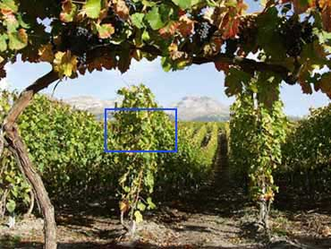

Λαογραφικά στοιχεία περιοχής Βουρλών
"Ο Βουρλιώτης και το αμπέλι"

«Ο καλός ρεσπέρης, με την κύρια έννοια του αμπελουργού, ήταν πρόσωπο σεβαστό στα Βουρλά. Και κάτι άλλο που φανερώνει πως ο Βουρλιώτης το αμπέλι το ένιωθε σαν κάτι το "ψυχικά" ζωντανό. Τον καιρό της μεγάλης ζέστης κατά τον Ιούλιο, το μεσημέρι δεν έμπαινε ποτέ μέσα στο αμπέλι ο Βουρλιώτης και απαγόρευε και σε κάθε άλλο δικό του ή ξένο να μπει. Λες και κοιμόταν και το αμπέλι αυτή την ώρα και η ανθρώπινη παρουσία θα χαλούσε την ησυχία του. Είναι ίσως η λογικότερη εξήγηση που μπορεί να δοθεί στην περίεργη αυτή απαγόρευση»
Εκφράσεις Βουρλιωτών σχετικές με το αμπέλι:
"Το αμπέλι σε σηκώνει", δηλαδή σε στηρίζει και σε βοηθά να προκόψεις.
"Δεν έχει κουτσούρα να κρεμαστεί", περιφρονητική φράση για όσους δεν είχαν διόλου αμπέλι.
"Ηγένηκε σαν το τουρκάμπελο", για το παραμελημένο ("χαραπιασμένο") αμπέλι, αλλά και για κάθε τι που βρισκόταν σε ανάλογη κατάσταση.
Απόσπασμα από "Τα Βουρλά της Μικράς Ασίας", Μέρος Β΄ Λαογραφικά, του Νίκου Μηλιώρη